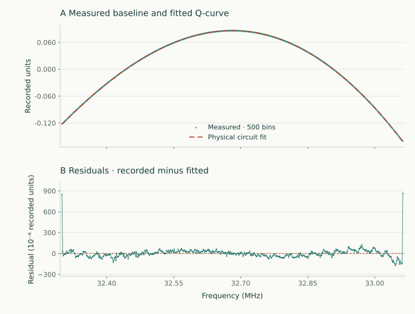

From circuit theory to a measured baseline
Fit the Q-curve.
Understand the residual.
Before generating training spectra, reproduce the instrument's background with the correct circuit. This practical derives a fresh implementation from the paper, fits recorded voltage sweeps, and separates curve agreement from hardware identification.
Use the circuit diagram and Eqs. (1)–(14) in Seay, Fernando, and Keller. The implementation is circuit.py; the optimizer is fit_baseline.py. They are independent of any research software checkout.
Your deliverable
A saved physical model, measured-versus-fitted overlay, residual plot and statistics, parameter bounds and fixed assumptions, and enough metadata to reconstruct the fit without optimizing again. See the measured example below →
Measured example · the physical circuit in action
See how closely the fit follows a real baseline.
The green points are an experimental sweep; the dashed rust curve is the saved physical Q-meter fit. Their agreement is close enough that the curves nearly coincide. The lower panel expands the residual scale so the remaining differences stay visible.
Trace 5 · median residual RMS among five distinct sweeps
Measured data → circuit fit → residuals

{kind=link}
This example is selected by the median whole-scan residual RMS, not the minimum. The largest absolute residual is 237.38 × 10⁻⁶ recorded units; the endpoint deviations have not been cropped out. The fit uses 24 starting points and the same circuit implementation used by the generator.
Compare all five distinct measured sweeps
| Sweep | RMS (10⁻⁶ recorded units) | RMS / peak-to-peak |
|---|---|---|
| Trace 1 | 109.728 | 0.1744% |
| Trace 2 | 14.076 | 0.0363% |
| Trace 3 | 15.295 | 0.0242% |
| Trace 4 | 15.379 | 0.0281% |
| Trace 5 · shown | 15.303 | 0.0275% |
Trace 1 has a localized residual near 212.91 MHz. The diagnostics section explains why such structure must not automatically be treated as electronic noise.
Computed directly from the saved measured-fit CSVs; the fitted curve is checked against its stored circuit and detector coefficients before export. Download the figure provenance, fit settings, and statistics. The original CSV and acquisition timestamps remain local. A close baseline fit does not uniquely measure each component or establish polarization accuracy.
01 · Write down the actual measurement
A baseline is a circuit response.
Use the e+iωt convention. The susceptibility is χ = χ′ − iχ″. The baseline has χ = 0; including nuclear susceptibility changes the same coil, not the topology. For the paper's cgs susceptibility convention:
Zcoil = Rcoil + iωLeff
Zload = [1/Zcoil + iωCstray]−1
Writing stray capacitance as an admittance gives the correct Cstray = 0 limit: the coil remains connected. Absorption increases the real coil loss for positive polarization; dispersion changes the reactive part.
Transform the coil through the cable
Rc, Lc, Gc, and Cc are distributed parameters per meter. Use a single consistent RLGC model for both characteristic impedance and propagation:
Z₀ = √[(Rc + iωLc)/(Gc + iωCc)]
Zline = Z₀ [Zload + Z₀ tanh(γℓ)] / [Z₀ + Zload tanh(γℓ)]
Choose the passive square-root branch. Cable length ℓ stays fixed during a scan. In a lossless line, zero and integer-half-wave lengths reproduce the load; a quarter-wave length gives Z₀²/Zload. Check all three cases numerically.
Include tuning and finite-source loading once
u = (U/R₀) / [1/Zleg + 1/R₀ + 1/Rinput]
Vdet = G Re[u exp(iφ)] + VDC
RF source U ── R₀ ──●── R_D ── C_tune ── cable ── load
│ │
R_input load = (R_coil + iωL_eff)
│ in parallel with C_stray
ground to ground
Detect the phase-referenced voltage at ●.This is the nodal solution of Fig. 1 and the complex form underlying Eq. (2). There is one tuning capacitor and one application of source/input loading. The printed definitions of ZT in Eqs. (3) and (6) overlap; the code uses explicit line_input and resonator_impedance names so the capacitor cannot be counted twice. This resolves the implementation convention from the diagram without claiming a literal substitution of those inconsistent names.
Detector phase acts on the complex voltage. Do not replace phase-sensitive detection with |u| or insert an unrelated slope into the nuclear amplitude. The model supports centered linear and quadratic detector phase; this first fitting exercise keeps them fixed at zero and fits a constant phase.
02 · Understand the file before the optimizer
Units and records are part of the model.
The supplied example file has six headerless rows. Each contains a timestamp and 500 voltage samples. Two rows are exactly identical, leaving five distinct traces. Read it with numpy.loadtxt; treating the first row as a CSV header would silently discard a real measurement.
| Field | Convention | Check before use |
|---|---|---|
| Frequency | fj = 212.6 + 0.0015287 j MHz, j = 0…499 | Inherited scan mapping; confirm against acquisition metadata. |
| Internal circuit units | Hz, V, Ω, H, F, m, rad | Convert MHz and pF explicitly at the boundary. |
| Recorded values | Recorded units until the DAQ conversion is confirmed | Do not infer V or mV from a variable name or plot. |
| Susceptibility | χ = 0 for baseline fitting | The filling factor and susceptibility scale cannot be fitted from this trace. |
| Offset | One fitted constant in recorded units | No subtraction of the minimum over the chosen grid. |
The amplitude and phase fit absorbs the unknown detector/DAQ scale. That permits a baseline-shape comparison without pretending that RF voltage, gain, and voltage units have been independently measured.
03 · Fit the model you can support
Constrain the circuit.
Solve the easy parameters exactly.
The nonlinear search varies tuning capacitance, cable length, and stray capacitance. Resistances, coil inductance, and cable RLGC are fixed nominal inputs—not newly measured hardware values. The supplied positive component values provide initial engineering scales; no equations or optimizer machinery from the old fit script are imported.
The initial search bounds are 0.2–600 pF for tuning capacitance, 3–5 m for cable length, and 0–400 pF for stray capacitance. These are explicit search bounds, not experimental confidence intervals. The cable window covers several electrical-length branches at 213 MHz. Replace these assumptions with component measurements for a hardware-specific fit.
Variable projection
For a candidate circuit, calculate the complex node voltage u. Write the recorded output as:
A = √(a² + b²), φ = atan2(−b, a)
Solve a, b, and d by linear least squares at every nonlinear step. This eliminates redundant amplitude/phase searches. The resulting A is recorded units per node volt, not a separate measurement of RF drive or susceptibility calibration.
Use 24 reproducible starts for the three bounded shape parameters. Keep every candidate, its objective value, convergence flag, and evaluation count. Multiple similar minima are useful evidence of non-identifiability; they are not discarded as inconvenient fits.
python -m pip install -r requirements.txt
python tools/fit_baseline.py /path/to/single_event_data.csv \
--start-mhz 212.6 --step-mhz 0.0015287 \
--starts 24 --output-dir local-results/baseline-fit
# Only after confirming the acquisition units, add e.g.
# --volts-per-unit 0.001 (if ONE recorded unit really is ONE mV)The default objective is unweighted least squares on all 500 bins. No measurement-error covariance was supplied, so the report does not fabricate a reduced χ² or parameter-error bars. Existing output directories are protected.
04 · Let the residual challenge the fit
The overlay is not the whole result.
The fresh circuit follows the five distinct supplied Q-curves. Four traces have whole-scan residual RMS around 1.4–1.5 × 10⁻⁵ recorded units. The remaining trace has a localized residual near 212.91 MHz and RMS about 1.1 × 10⁻⁴. These are fit residuals, not independently established electronic-noise levels.
Several traces also show endpoint residuals. All bins remain included in this first fit, and no resonance or edge feature is silently removed. The measured example above shows one representative fit and its residuals. The full original CSV, acquisition timestamps, and remaining per-trace tables stay local.
Inspect these before accepting a generator configuration
- Plot recorded minus fitted voltage against frequency, on its own vertical scale.
- Look for a localized feature, smooth drift, edge artifacts, and correlated structure.
- Check whether a parameter reaches a bound or varies strongly between nearly equivalent starting-point solutions.
- Inspect the scaled Jacobian condition; a near-singular problem cannot justify precise component estimates.
- If excluding a signal region or settling bins is justified, record the mask and compare the excluded region separately. This first workflow deliberately uses no exclusion mask.
- Validate on independent baseline acquisitions, not just other bins from the fitted sweep.
A sharp localized residual is not evidence for an additional broad circuit component. It may require a signal model or an acquisition explanation. Equally, a small RMS does not establish that every fitted capacitor or cable length is the unique physical hardware value.
05 · Make the result reconstructible
Save the evidence with the curve.
The output directory contains baseline_fits.png, one trace_N.csv per distinct trace, and fit_report.json. The report records source/code hashes, library versions, seeds, bounds, fixed circuit fields, fitted quadrature coefficients, all multi-start candidates, residual statistics, duplicate counts, and unit status.
import json
import sys
import numpy as np
sys.path.insert(0, "tools")
from fit_baseline import fitted_curve
report = json.load(open("local-results/baseline-fit/fit_report.json"))
f_hz = (report["start_mhz"] + np.arange(500)*report["step_mhz"])*1e6
y_fit = fitted_curve(f_hz, report["fits"][0])
# This reconstructs the saved fit in recorded units; no optimizer is run.If a confirmed voltage conversion was provided, the report also supplies circuit_in_confirmed_volts. Otherwise it keeps the physical circuit and recorded-unit detector mapping separate.
Run python -m unittest discover -s tests -v. Tests check the actual circuit's zero/half/quarter-wave limits, passive loss, zero stray-capacitance limit, finite-source loading, detector phase, and exact recovery of an independently generated baseline.
06 · From one fit to a training population
Match a family of measurements.
Five distinct traces are not five fully identified hardware configurations. Establish the voltage scale, independently constrain degenerate components, characterize repeated-scan noise, and collect representative operating periods before estimating joint training distributions.
The supplied scans are near the proton frequency, 213 MHz. The main tutorial's spin-1 exercise is near 32.7 MHz. Transfer the circuit theory and fitting procedure—not proton fit parameters, residual noise levels, or calibration constants—to the deuteron problem.
After matching baseline-only scans, fit the complex nuclear response with independent calibration, validate signal-to-baseline scales, and test the full generator against development spectra. Reserve separate acquisitions for the final estimator evaluation.